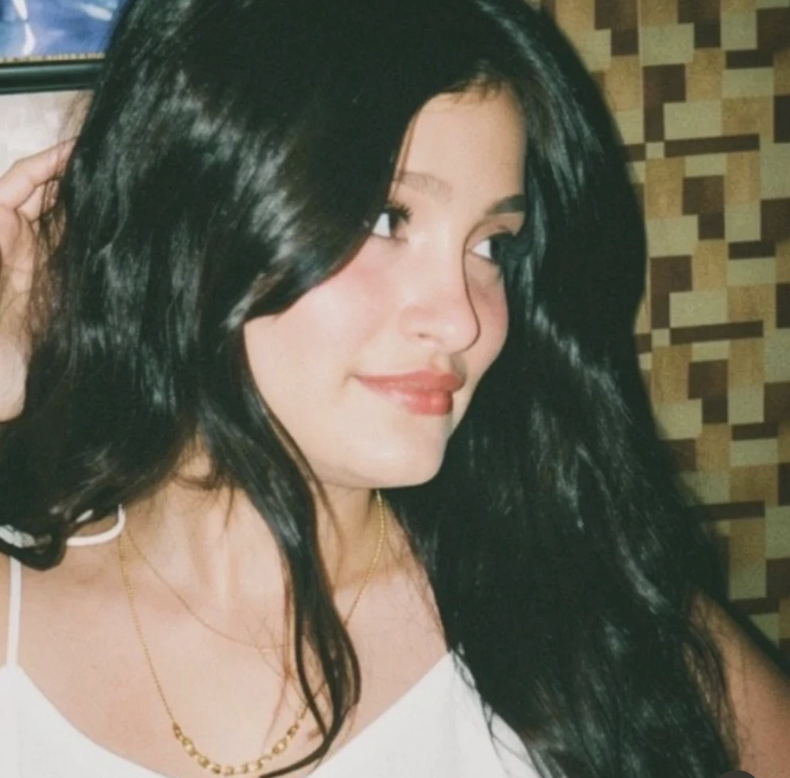
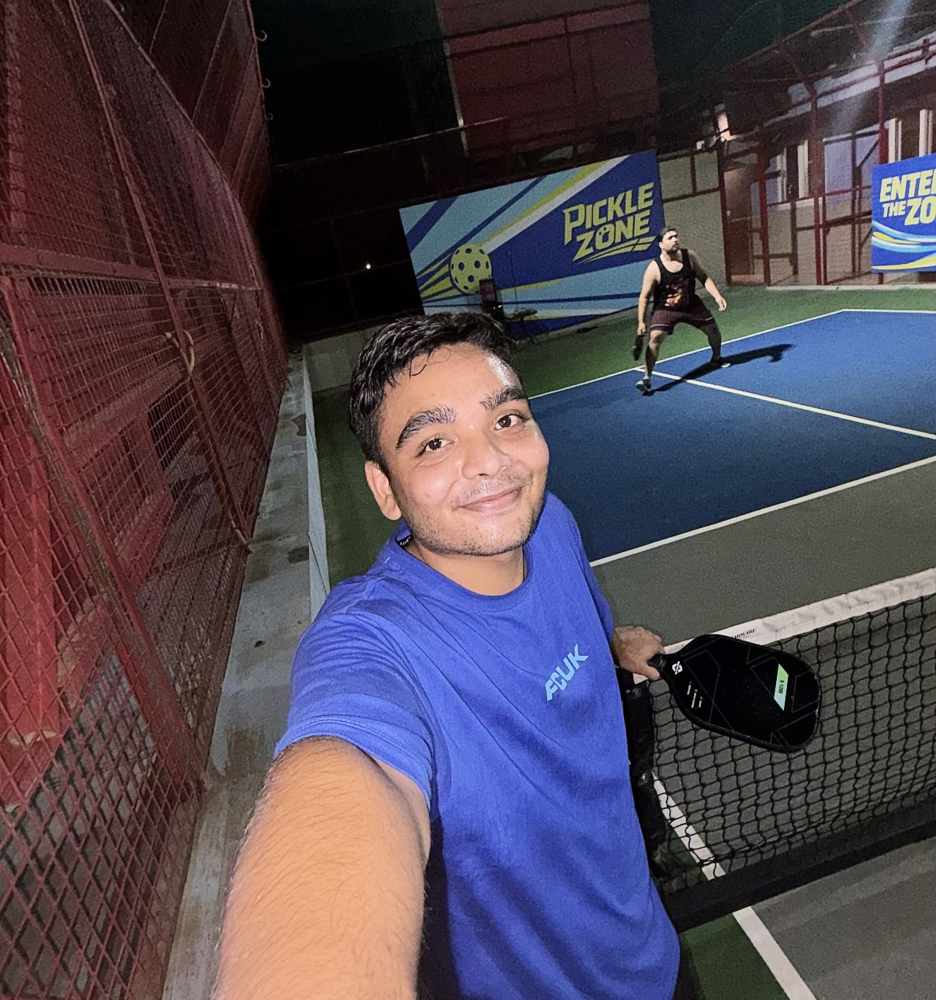

Our story
It started with a hello.
We met on OmeTV, of all places. Somehow a random conversation became social media, social media became late-night talks, and those talks slowly became the part of my day I started looking forward to the most.

Chapter 01
You became my favourite notification.
I don't know exactly when it happened. Somewhere between our conversations, your smile, your little ways and the comfort I felt talking to you, I realised I was catching feelings.

Chapter 02
And I stopped wanting “just a chat.”
I started wanting real memories. A movie. A long conversation. Laughing at things only we understand. And maybe, if you let me, something much more than that.
The honest part
“I don't know what you feel yet.— Sumit
But I know what I feel.”
From then to now
OmeTV ✦Socials ♡Endless talks ☾Feelings ❤️This moment ✨